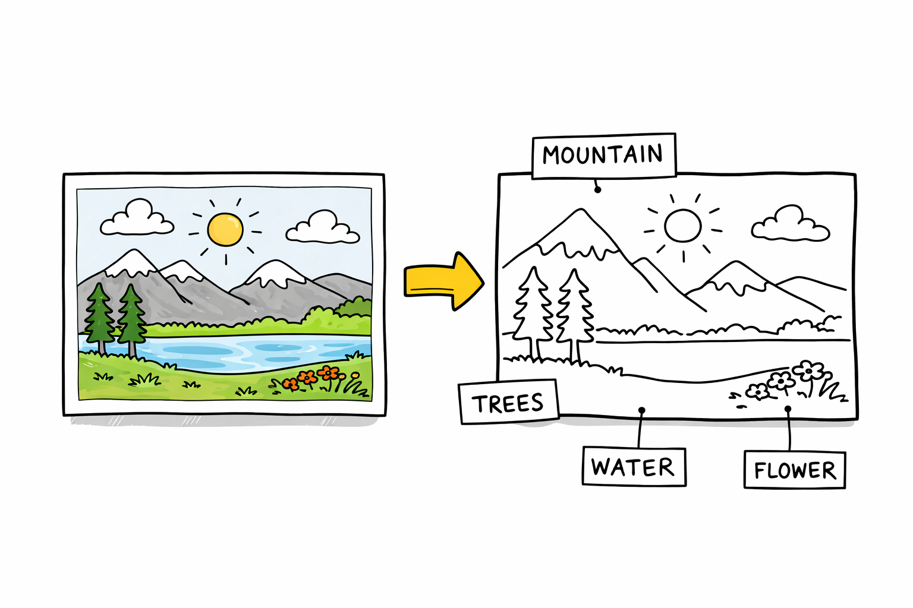
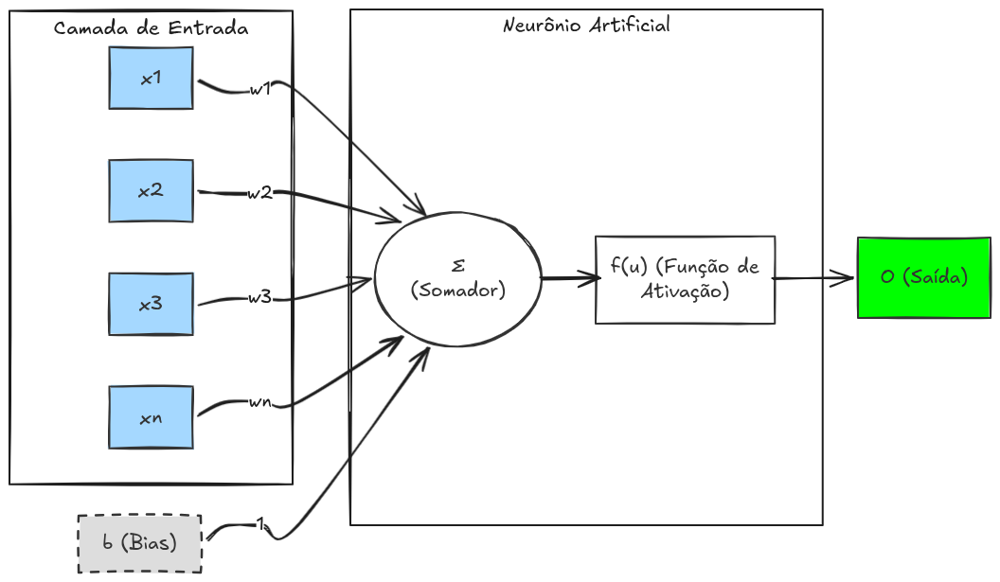
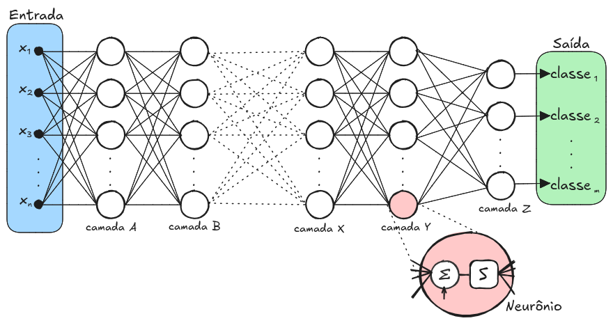
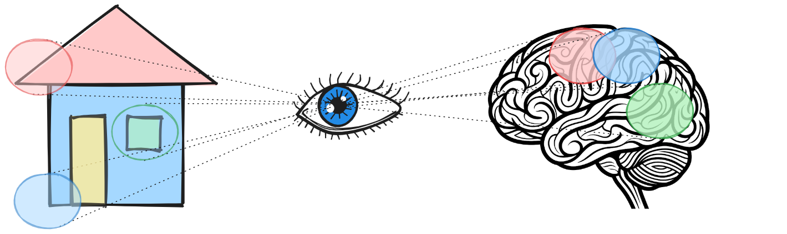
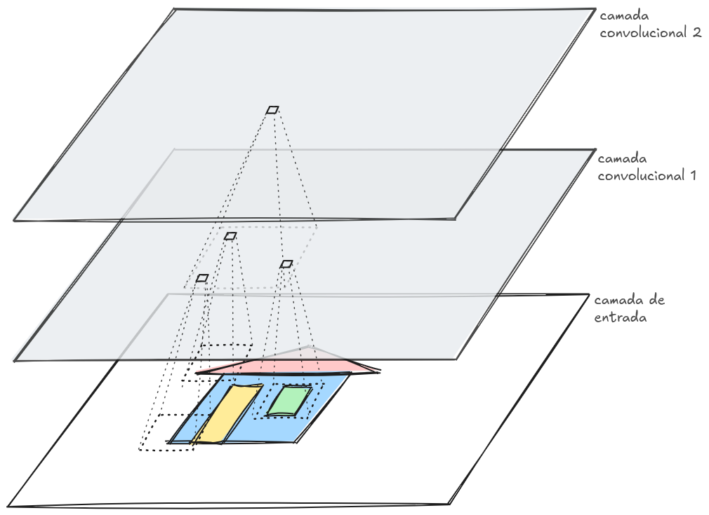
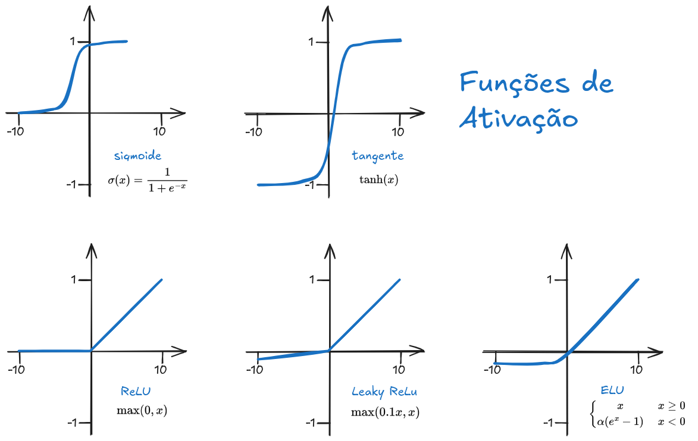
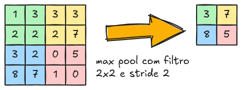
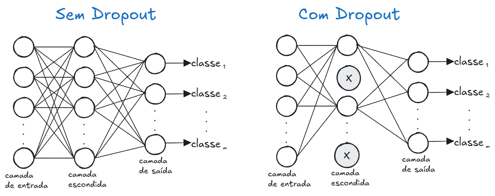
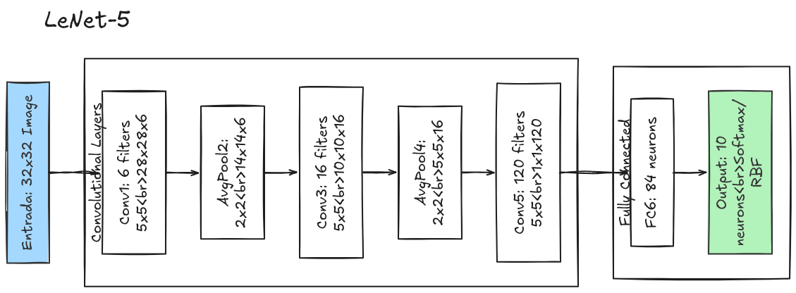
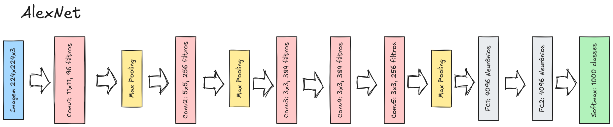

10 Reconhecimento e Interpretação de Imagens

O reconhecimento e a interpretação de imagens constituem a etapa final e mais sofisticada do processamento digital de imagens. Enquanto as etapas anteriores — como aquisição, pré-processamento, segmentação e extração de características — concentram-se na preparação e organização dos dados visuais, esta fase busca atribuir significado às informações extraídas.
O reconhecimento de imagens está relacionado à capacidade de identificar objetos, padrões ou classes previamente definidas em uma imagem. Esse processo envolve a comparação das características extraídas com modelos ou descritores conhecidos, permitindo classificar regiões ou objetos de interesse.
Já a interpretação de imagens vai além da simples identificação. Ela envolve a compreensão do contexto e das relações entre os elementos presentes na cena, possibilitando inferências mais complexas. Nessa etapa, o sistema busca responder não apenas “o que é”, mas também “o que está acontecendo” na imagem.
Esses processos são fundamentais em diversas aplicações, como o diagnóstico médico assistido por imagem, os sistemas de vigilância e segurança, os veículos autônomos, o reconhecimento facial e a análise de imagens industriais, evidenciando sua ampla relevância em diferentes áreas do conhecimento e da tecnologia.
Com o avanço das técnicas de aprendizado de máquina e, especialmente, das redes neurais profundas, o reconhecimento e a interpretação de imagens alcançaram níveis de desempenho cada vez mais elevados, aproximando-se, em muitos casos, da capacidade humana.
Neste capítulo, serão apresentados os principais conceitos, métodos e desafios envolvidos no reconhecimento e na interpretação de imagens, estabelecendo uma ponte entre o processamento de baixo nível e a tomada de decisão em sistemas inteligentes.
10.1 Motivação
O reconhecimento de objetos e padrões em imagens é uma das principais metas do processamento digital de imagens, pois representa a transição entre a análise de dados visuais e a tomada de decisão. Diferentes abordagens podem ser utilizadas nesse processo, sendo possível agrupá-las em duas grandes categorias.
A primeira baseia-se na decisão teórica, na qual os padrões são descritos por meio de características quantitativas. Nesse caso, atributos como comprimento, área, perímetro, forma e textura são extraídos da imagem e utilizados para distinguir diferentes classes de objetos. Essa abordagem é amplamente empregada em problemas onde as propriedades mensuráveis são suficientes para caracterizar os elementos de interesse.
A segunda abordagem utiliza a decisão estrutural, que considera descritores qualitativos. Nessa perspectiva, os padrões são representados por estruturas, relações espaciais ou simbólicas entre seus componentes. Em vez de focar apenas em medidas numéricas, busca-se compreender como os elementos estão organizados, o que é especialmente útil em cenários mais complexos, onde a forma e a organização têm papel fundamental.
Outro conceito central no reconhecimento e na interpretação de imagens é a aprendizagem. Sistemas modernos são frequentemente capazes de aprender a partir de exemplos, ajustando seus modelos internos com base em dados previamente rotulados ou em padrões identificados automaticamente. Esse processo permite que o sistema melhore seu desempenho ao longo do tempo, tornando-se mais robusto e adaptável a diferentes situações.
Dessa forma, o estudo dessas abordagens e do papel da aprendizagem é essencial para o desenvolvimento de sistemas capazes de interpretar imagens de maneira eficiente e inteligente.
10.2 Padrões e Classes de Padrões
No contexto do reconhecimento de imagens, um padrão pode ser entendido como um arranjo de descritores, também chamados de características. Esses descritores representam propriedades extraídas dos dados, como medidas geométricas, estatísticas ou estruturais, que permitem caracterizar um objeto ou uma região da imagem. Assim, um padrão não é a imagem em si, mas uma representação construída a partir de atributos relevantes para a análise.
Uma classe de padrões, por sua vez, corresponde a um conjunto (ou família) de padrões que compartilham propriedades em comum. Cada classe reúne elementos que apresentam similaridade segundo determinados critérios, sendo usualmente representadas por símbolos como \(w_1, w_2, \dots, w_W\), onde \(W\) indica o número total de classes consideradas no problema. Por exemplo, em um sistema de reconhecimento de caracteres, cada letra do alfabeto pode ser tratada como uma classe distinta.
O processo de reconhecimento automático de padrões consiste em associar corretamente cada padrão à sua respectiva classe, utilizando técnicas computacionais que minimizem a necessidade de intervenção humana. Esse processo envolve desde a escolha adequada dos descritores até o uso de algoritmos capazes de realizar a classificação com precisão, mesmo na presença de ruídos ou variações nos dados.
Para representar padrões de forma eficiente, utilizam-se diferentes estruturas de dados, dependendo da natureza das características envolvidas. Em problemas com descrições quantitativas, é comum empregar vetores de características, nos quais cada elemento representa um atributo numérico. Já em abordagens estruturais, podem ser utilizadas strings ou árvores, que permitem representar relações e organizações mais complexas entre os componentes do padrão. Essas diferentes formas de representação são fundamentais para adequar o modelo ao tipo de problema a ser resolvido.
10.3 Vetores de Características
Uma das formas mais comuns de representar padrões em problemas de reconhecimento é por meio dos vetores de características (feature vectors ou pattern vectors). Nessa abordagem, cada padrão é descrito como um conjunto organizado de atributos numéricos, permitindo sua manipulação de forma eficiente por algoritmos matemáticos e computacionais.
Os vetores de características são usualmente representados por letras minúsculas em negrito, como x, y ou z, e possuem a forma:
\[ x = \begin{bmatrix} x_1 \\ x_2 \\ \vdots \\ x_n \end{bmatrix} \]
Cada componente \(x_i\) do vetor corresponde ao i-ésimo descritor do padrão, ou seja, a uma característica específica extraída da imagem. Esses descritores podem representar diferentes propriedades, como intensidade média, área, textura, orientação ou qualquer outra medida relevante para o problema em questão. O valor de \(n\) indica o número total de descritores utilizados, definindo assim a dimensão do vetor de características.
Essa forma de representação é particularmente importante porque permite tratar padrões como pontos em um espaço multidimensional, onde cada dimensão corresponde a uma característica. Dessa maneira, técnicas de classificação e análise podem ser aplicadas de forma sistemática, explorando relações geométricas e estatísticas entre os padrões.
10.4 Exemplo: Classificação de Flores Íris
Um exemplo clássico de reconhecimento de padrões é o problema de classificação das flores do gênero íris, amplamente utilizado para ilustrar conceitos fundamentais da área. Nesse problema, o objetivo é identificar a qual classe pertence uma determinada flor com base em características extraídas de suas pétalas.
Para simplificar a análise, podem ser utilizadas apenas duas características, formando um vetor de características definido por \(x = [x_1, x_2]^T\), em que \(x_1\) representa o comprimento da pétala e \(x_2\) representa sua largura. Dessa forma, cada flor é descrita por um vetor bidimensional, facilitando tanto a visualização quanto a aplicação de métodos de classificação.
As flores são divididas em três classes de padrões, denotadas por \(w_1\), \(w_2\) e \(w_3\), que correspondem às variedades setosa, virgínica e versicolor, respectivamente. Cada uma dessas classes apresenta características próprias, embora possa haver sobreposição entre elas dependendo das medidas consideradas.
Com essa representação, cada flor pode ser interpretada como um ponto em um espaço bidimensional, no qual os eixos correspondem às características selecionadas. Esse tipo de visualização permite compreender como os padrões se distribuem no espaço de características e como diferentes classes podem ser separadas por meio de técnicas de classificação.
O exemplo ilustrativo em sequência implementa aa classificação das flores Iris. No exemplo pode-se treinar um modelo de aprendizado de máquina para distinguir automaticamente entre diferentes espécies — como setosa, versicolor e virginica — a partir de características mensuráveis das flores, especialmente o comprimento e a largura das pétalas e sépalas. Inicialmente, um conjunto de dados rotulado é utilizado para que o modelo aprenda os padrões associados a cada classe. Em seguida, esses dados podem ser visualizados em um plano bidimensional (por exemplo, usando apenas as medidas das pétalas), permitindo observar como as espécies se agrupam no espaço de características. Após o treinamento, o modelo é capaz de receber novas amostras e classificá-las com base nesses padrões aprendidos, demonstrando, de forma prática, conceitos fundamentais de aprendizado supervisionado como treinamento, generalização e tomada de decisão. Para testar, basta clicar no plano. No rotulo abaixo é apresentado a classificação da flor selecionada.
10.5 Uso de Representações e Descritores como Features
No capítulo anterior, foram apresentadas diversas técnicas de representação e descrição de imagens, incluindo descritores de forma, textura e níveis de cinza. Nesta seção, estabelece-se a conexão entre esses conceitos e os sistemas de aprendizado de máquina, nos quais tais descritores passam a desempenhar o papel de features (características de entrada).
De modo geral, algoritmos de aprendizado de máquina não operam diretamente sobre imagens em sua forma bruta, mas sim sobre representações numéricas que sintetizam informações relevantes. Nesse contexto, os descritores extraídos — como área, perímetro, momentos, histogramas de intensidade, características de textura (como GLCM) e atributos morfológicos — são organizados em vetores de características, que servem como entrada para os modelos de classificação ou regressão.
Por exemplo, em um problema de classificação de objetos, pode-se utilizar:
descritores de forma, como compacidade e excentricidade, para diferenciar objetos geométricos;
descritores de textura, como contraste, homogeneidade e entropia, para distinguir superfícies;
descritores de intensidade, como histogramas de níveis de cinza, para capturar padrões globais da imagem.
A escolha das features é uma etapa crucial, pois influencia diretamente o desempenho do sistema. Boas características devem ser:
discriminativas, ou seja, capazes de diferenciar bem as classes;
robustas, pouco sensíveis a ruídos, rotações ou variações de escala;
compactas, evitando redundância e reduzindo a dimensionalidade do problema.
Uma vez definidos os descritores, cada imagem (ou região de interesse) é convertida em um vetor de características, permitindo que técnicas de aprendizado supervisionado, como classificadores estatísticos ou redes neurais, sejam aplicadas. Nesse cenário, o problema de interpretação de imagens é transformado em um problema de aprendizado em espaços vetoriais.
É importante destacar que, embora métodos modernos de aprendizado profundo (deep learning) possam aprender automaticamente representações diretamente a partir dos dados, o uso de descritores clássicos continua sendo relevante em diversos contextos, especialmente quando há necessidade de dados ou necessidade de interpretabilidade.
Assim, as técnicas de representação e descrição estudadas anteriormente constituem a base fundamental para a construção de sistemas inteligentes de reconhecimento e interpretação de imagens.
10.6 Casamento de Padrões e Medidas de Correlação
O casamento de padrões (pattern matching) é uma abordagem fundamental no reconhecimento de imagens, cujo objetivo é verificar o grau de similaridade entre um padrão desconhecido e um conjunto de padrões previamente conhecidos. Em essência, busca-se determinar qual modelo melhor corresponde aos dados observados, sendo essa uma estratégia amplamente utilizada em tarefas como detecção de objetos, reconhecimento de caracteres e alinhamento de imagens.
Uma das formas mais comuns de realizar o casamento de padrões é por meio de medidas de similaridade ou distância entre vetores de características. Considerando que cada padrão é representado como um vetor em um espaço multidimensional, o problema pode ser interpretado geometricamente: padrões semelhantes tendem a estar próximos entre si, enquanto padrões distintos estão mais afastados.
Dentre as diversas medidas existentes, destacam-se as medidas de correlação, que avaliam o grau de associação entre dois conjuntos de dados. A correlação é especialmente útil quando se deseja medir a similaridade entre padrões considerando não apenas suas magnitudes, mas também a forma como seus valores variam em conjunto.
Uma medida amplamente utilizada é o coeficiente de correlação, que indica o quanto dois vetores estão linearmente relacionados. Valores próximos de 1 indicam alta similaridade, valores próximos de 0 indicam baixa relação, e valores negativos indicam correlação inversa. Em aplicações de processamento de imagens, a correlação pode ser empregada, por exemplo, para localizar um padrão específico dentro de uma imagem maior, comparando uma janela deslizante com um modelo de referência.
Além da correlação simples, é comum utilizar a correlação normalizada, que reduz a influência de variações de iluminação e contraste, tornando o método mais robusto. Essa técnica é particularmente importante em aplicações reais, onde as condições de aquisição da imagem podem variar significativamente.
O casamento de padrões baseado em correlação apresenta algumas vantagens, como simplicidade de implementação e interpretação intuitiva. No entanto, pode ser sensível a transformações geométricas, como rotação e escala, exigindo, em muitos casos, o uso de técnicas complementares ou pré-processamentos adequados.
De forma geral, o casamento de padrões e as medidas de correlação constituem ferramentas essenciais no reconhecimento de imagens, servindo como base para métodos mais avançados e sendo amplamente aplicados tanto em abordagens clássicas quanto em sistemas modernos.
10.7 Redes Neurais e Redes Neurais de Múltiplas Camadas
As redes neurais artificiais (Haykin (2009), Bishop (2006), Goodfellow et al. (2016), Mitchell (1997), Rumelhart et al. (1986), Cybenko (1989), Hornik et al. (1989), Hagan et al. (1996), ilustrado na Figura 10.1) constituem uma das principais abordagens para o desenvolvimento de sistemas inteligentes capazes de realizar reconhecimento e interpretação de imagens. Inspiradas no funcionamento do cérebro humano, essas redes são compostas por unidades básicas chamadas neurônios artificiais, organizadas em camadas e interconectadas por pesos ajustáveis.

Cada neurônio recebe um conjunto de entradas, realiza uma combinação linear ponderada desses valores e aplica uma função de ativação, produzindo uma saída. Durante o processo de aprendizado, os pesos das conexões são ajustados de forma a minimizar o erro entre a saída produzida pela rede e a saída desejada. Esse ajuste é geralmente realizado por algoritmos de otimização, como o método do gradiente descendente associado ao algoritmo de retropropagação (backpropagation).
Nos sistemas de reconhecimento de imagens, as redes neurais recebem como entrada vetores de características extraídos das imagens — como descritores de forma, textura e intensidade — e aprendem a associar esses vetores a classes específicas. Dessa forma, a rede atua como um classificador capaz de generalizar a partir de exemplos previamente apresentados.

As redes neurais de múltiplas camadas, (ilustrado na Figura 10.2) também conhecidas como Multilayer Perceptrons (MLP), estendem esse modelo básico ao incluir uma ou mais camadas ocultas entre a entrada e a saída. Essas camadas intermediárias permitem que a rede aprenda representações mais complexas dos dados, sendo capaz de modelar relações não lineares entre as características e as classes.
Uma propriedade importante dessas redes é sua capacidade de aproximar funções complexas, o que as torna adequadas para problemas onde as fronteiras de decisão entre classes não são linearmente separáveis. No contexto de imagens, isso significa que a rede pode aprender a distinguir padrões mesmo quando há grande variabilidade nos dados, como mudanças de iluminação, ruído ou deformações.
Com o avanço da área, surgiram arquiteturas mais sofisticadas, como as redes neurais profundas (deep learning), que utilizam múltiplas camadas para aprender automaticamente representações hierárquicas diretamente a partir das imagens. Em particular, as redes neurais convolucionais (Convolutional Neural Networks — CNNs) tornaram-se o padrão para tarefas de visão computacional, pois exploram a estrutura espacial das imagens de forma eficiente.
Apesar disso, as redes neurais clássicas de múltiplas camadas continuam sendo uma ferramenta importante, especialmente em cenários onde as características já foram previamente extraídas. Nesses casos, elas oferecem uma solução eficiente e relativamente simples para a construção de sistemas de reconhecimento e interpretação de imagens.
Em síntese, as redes neurais desempenham um papel central na construção de sistemas inteligentes, permitindo que máquinas aprendam a identificar padrões, classificar objetos e interpretar cenas com alto grau de precisão.
10.8 Redes Neurais Convolucionais (CNN)
As Redes Neurais Convolucionais (Convolutional Neural Networks – CNNs, LeCun et al. (1998), Goodfellow et al. (2016), Krizhevsky et al. (2012), Simonyan e Zisserman (2015), He et al. (2016), Szegedy et al. (2015)) representam uma das principais abordagens modernas para o reconhecimento e interpretação de imagens. Essas redes têm sido amplamente utilizadas não apenas em visão computacional, mas também em áreas como processamento de voz e linguagem natural. Sua concepção foi inspirada em estudos do córtex visual humano, nos quais se observou que certos neurônios respondem a estímulos visuais localizados em regiões específicas do campo visual (conforme ilustrado na Figura 10.3).

Essa característica motivou o desenvolvimento de modelos capazes de explorar informações locais em imagens, tornando as CNNs especialmente eficientes para capturar padrões espaciais.
Motivação e Redução de Dimensionalidade
Em redes neurais tradicionais do tipo feedforward, o número de neurônios necessários para processar imagens pode se tornar extremamente elevado. Por exemplo, uma imagem de dimensão \(1000 \times 1000\) exigiria, em uma abordagem direta, cerca de \(10^6\) neurônios apenas na camada de entrada.
As CNNs resolvem esse problema ao explorar duas ideias fundamentais: compartilhamento de pesos e conectividade local. Dessa forma, conseguem extrair características relevantes da imagem enquanto reduzem significativamente sua dimensionalidade. Um exemplo típico mostra que uma imagem de entrada com dimensão \(224 \times 224 \times 3\) pode ser transformada, ao longo das camadas da rede, em uma representação muito menor, como \(1 \times 1 \times 1000\), mantendo as informações essenciais para classificação.
Representação da Imagem e Operação de Convolução
Uma imagem colorida pode ser interpretada como a combinação de três matrizes, correspondentes aos canais de cor vermelho \(R\), verde \(G\) e azul \(B\). Cada pixel é, portanto, descrito por três valores de intensidade.
A operação central das CNNs é a convolução, na qual pequenos filtros (ou máscaras) percorrem a imagem (conforme ilustrado na Figura 10.4), detectando padrões locais como bordas, texturas e formas. Por exemplo, filtros específicos podem ser projetados para identificar linhas horizontais ou verticais.

Dois parâmetros importantes nesse processo são:
- Stride (passo): define o deslocamento do filtro a cada aplicação;
- Padding: adiciona bordas (geralmente com zeros) à imagem, permitindo controlar o tamanho da saída e preservar informações nas extremidades.
Estrutura das Camadas em uma CNN
Uma CNN é composta por diferentes tipos de camadas, organizadas de forma hierárquica:
Camada de Entrada (Input)
É a camada inicial da rede, responsável por receber a imagem. Sua dimensão corresponde à resolução da imagem e ao número de canais (por exemplo, RGB).
Camada Convolucional (Convolutional Layer)
Essa é a principal camada da CNN, responsável pela extração de características. Nela, filtros são aplicados à imagem para gerar mapas de características (feature maps). Após a convolução, é comum aplicar uma função de ativação (ilustradas na Figura 10.5), como a ReLU (Rectified Linear Unit), que substitui valores negativos por zero, introduzindo não linearidade ao modelo.

Camada de Pooling
A camada de pooling (ilustrada na Figura 10.6) tem como objetivo reduzir a dimensionalidade dos dados, mantendo as características mais importantes. Isso contribui para diminuir o custo computacional e aumentar a robustez a pequenas variações na imagem.

Se a entrada possui dimensão \(w_1 \times h_1 \times d_1\), a saída da camada de pooling pode ser calculada como:
\[ w_2 = \frac{w_1 - F}{S} + 1 \]
\[ h_2 = \frac{h_1 - F}{S} + 1 \]
\[ d_2 = d_1 \]
onde \(F\) é o tamanho do filtro e \(S\) é o stride.
O exemplo interativo seguinte demonstra os cálculos e o resultado da camada de Pooling.
Camada Fully Connected (FC)
Após as etapas de extração e redução de características, os dados são encaminhados para camadas totalmente conectadas. Essas camadas funcionam de maneira semelhante às redes neurais tradicionais, combinando as características extraídas para realizar a classificação.
Camada de Saída
A camada final da rede fornece o resultado da classificação. Em problemas binários, utiliza-se frequentemente a função logística; em problemas multiclasse, utiliza-se a função softmax, que produz probabilidades associadas a cada classe.
Camada Dropout
A camada de dropout (ilustrada na Figura 10.7) é uma técnica de regularização utilizada para evitar overfitting. Durante o treinamento, ela desativa aleatoriamente uma fração dos neurônios, forçando a rede a aprender representações mais robustas e generalizáveis.

Arquiteturas de CNN
Diversas arquiteturas de CNN foram propostas ao longo dos anos, cada uma trazendo avanços significativos na área de visão computacional. De forma geral, essas arquiteturas consistem no empilhamento de camadas convolucionais, funções de ativação e camadas de pooling, seguidas por camadas totalmente conectadas.

Entre as arquiteturas mais conhecidas, destacam-se:
- LeNet-5: uma das primeiras CNNs, aplicada ao reconhecimento de dígitos (ilustrado na Figura 10.8);
- AlexNet: responsável por impulsionar o uso de deep learning em visão computacional (ilustrado na Figura 10.9);
- GoogleNet (Inception): introduziu estruturas mais profundas e eficientes;
- ResNet: utilizou conexões residuais para treinar redes muito profundas com maior estabilidade.

10.9 Considerações Finais
Ao longo deste capítulo, foi possível compreender como o reconhecimento e a interpretação de imagens representam o nível mais alto do processamento digital de imagens, no qual os dados deixam de ser apenas estruturas numéricas e passam a adquirir significado. Essa transição é fundamental para o desenvolvimento de sistemas capazes de tomar decisões e atuar de forma inteligente em diferentes contextos.
Inicialmente, foram discutidos os conceitos de padrões e classes de padrões, destacando a importância da representação adequada por meio de descritores. A utilização de vetores de características mostrou-se essencial para transformar informações visuais em dados estruturados, permitindo a aplicação de métodos matemáticos e computacionais. Exemplos clássicos, como a classificação de flores íris, evidenciaram como padrões podem ser organizados e separados em espaços de características.
Na sequência, foi explorada a relação entre os descritores estudados no capítulo anterior e sua utilização como features em sistemas de aprendizado de máquina. Ficou evidente que a qualidade das características extraídas exerce forte influência no desempenho dos modelos, sendo um dos fatores determinantes para o sucesso do reconhecimento de padrões.
Também foram abordadas técnicas de casamento de padrões e medidas de correlação, que fornecem mecanismos diretos para avaliar similaridade entre dados. Essas abordagens, embora conceitualmente simples, constituem a base de muitos sistemas práticos e servem como ponto de partida para métodos mais avançados.
O capítulo avançou, então, para o estudo das redes neurais artificiais, com destaque para as redes de múltiplas camadas, capazes de modelar relações não lineares e aprender a partir de exemplos. Esse desenvolvimento culminou nas redes neurais convolucionais (CNNs), que representam o estado da arte em reconhecimento de imagens, permitindo a extração automática de características e o aprendizado de representações hierárquicas diretamente a partir dos dados.
De forma geral, observa-se uma evolução clara: de métodos baseados em descritores definidos manualmente para abordagens que aprendem automaticamente as representações mais adequadas. Ainda assim, os conceitos clássicos permanecem fundamentais, tanto para a compreensão dos modelos modernos quanto para aplicações em que interpretabilidade, simplicidade ou necessidade de dados são fatores relevantes.
Por fim, destaca-se que o reconhecimento e a interpretação de imagens continuam sendo áreas em constante evolução, impulsionadas pelo avanço do aprendizado de máquina e pelo aumento da disponibilidade de dados. O domínio dos conceitos apresentados neste capítulo fornece uma base sólida para o desenvolvimento de aplicações inteligentes em diversas áreas, como medicina, indústria, segurança e sistemas autônomos.
Exercício 1 — Conceitual
Explique com suas palavras:
- O que é interpretação de imagens
- Como ela se diferencia da segmentação e da descrição
- Qual seu papel em sistemas de visão computacional
Exercício 2 — Pipeline de visão
Explique as etapas de um sistema típico de visão computacional:
- Aquisição
- Pré-processamento
- Segmentação
- Representação e descrição
- Interpretação
Qual o papel de cada etapa?
Exercício 3 — Classificação
Explique:
- O que é um problema de classificação
- Diferença entre classificação supervisionada e não supervisionada
- Exemplos de aplicações
Exercício 4 — Características (features)
Explique:
- O que são características (features)
- Por que são importantes para a interpretação
- Exemplos de características utilizadas em imagens
Exercício 5 — Treinamento e teste
Explique:
- O que é um conjunto de treinamento
- O que é um conjunto de teste
- Por que é importante separar esses conjuntos
Exercício 6 — Classificadores
Explique o funcionamento básico de:
- K-vizinhos mais próximos (KNN)
- Árvores de decisão
- Redes neurais
Exercício 7 — Métricas de avaliação
Explique:
- Acurácia
- Precisão
- Revocação (recall)
- F1-score
Quando cada métrica é mais importante?
Exercício 8 — Matriz de confusão
Explique:
- O que é uma matriz de confusão
- O significado de:
- Verdadeiro positivo
- Falso positivo
- Verdadeiro negativo
- Falso negativo
Exercício 9 — Implementação prática (classificação simples)
Implemente um programa que:
- Utilize características simples (ex: área, perímetro)
- Classifique objetos em duas classes
- Utilize um classificador simples (ex: KNN)
Exercício 10 — Implementação prática (avaliação)
Implemente:
- Cálculo de acurácia
- Construção da matriz de confusão
- Avaliação do desempenho do classificador
Exercício 11 — Comparação de métodos
Compare diferentes classificadores quanto a:
- desempenho
- complexidade
- necessidade de dados
Exercício 12 — Desafios
Explique os principais desafios da interpretação de imagens:
- Variação de iluminação
- Ruído
- Oclusões
- Variabilidade dos objetos
Questão reflexiva
Explique a importância da interpretação de imagens em aplicações como:
- Diagnóstico médico assistido por computador
- Veículos autônomos
- Reconhecimento facial
- Sistemas de vigilância
Discuta os impactos sociais e éticos dessas aplicações.